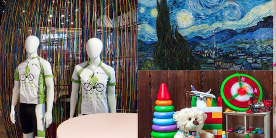

Tuần 15 · Tầng 02 (Self-Supervised Foundation Backbone)
Học Tự Giám Sát (SimCLR, MAE, DINOv2): Chống Sụp Đổ Biểu Diễn & Khai Thác Đa Tầng
02 · Backbone & Neck
transformers DINOv2 + Tự Build SSL Loss
Sức mạnh hình học vượt trội của DINOv2: Ghép nối
[CLS || Mean(Patches)] hoặc 4 tầng cuối từ vit_base_patch14_reg4_dinov2 tạo ra đặc trưng vừa giàu ngữ nghĩa toàn cục vừa nhạy bén chi tiết bộ phận vượt xa mạng giám sát ImageNet.
Kaggle CVPR Flagship · 3D & Retrieval
Image Matching Challenge 2024 - Hexathlon
Reconstruct 3D scenes from 2D images over six different domains
Dùng đặc trưng DINOv2 tìm cặp ảnh cùng kiến trúc chụp cách nhau hàng chục năm hoặc trái góc sáng trước khi khôi phục 3D!
Mở cuộc thi trên Kaggle ↗
Kaggle Research Competition · mAP@5
Google Universal Image Embedding
Create image representations that work across many visual domains

So sánh trực tiếp DINOv2 Linear/Whitening 64-D với Backbone giám sát ở Giai đoạn 2 trên 11 lĩnh vực vật thể.
Mở cuộc thi trên Kaggle ↗
Bước 1 · Dùng Thư Viện Chuẩn
Trích xuất đồng thời
CLS & Patch tokens từ Dinov2Model có sẵn trong transformers
dinov2_hf_library.py — Khai Thác CLS & Patch Tokens DINOv2 Bằng transformers
mastercv/losses/ssl_losses.py — InfoNCE & DINO Teacher Centering + Sharpening
Checklist Hoàn Thành Tuần 15:
- Khai thác
extract_dinov2_cls_and_patchtrên bài toán Truy xuất hoặc Ghép ảnh Kaggle IMC 2024, đối sánh với Backbone giám sát. - Kiểm chứng thực nghiệm: tắt
centerhoặc đặt trongDINOCenteringLossđể quan sát hiện tượng sụp đổ biểu diễn.